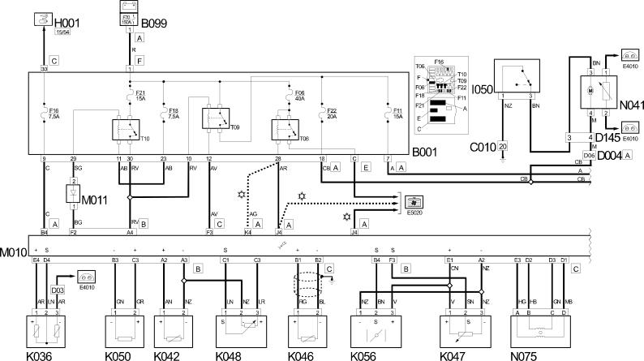
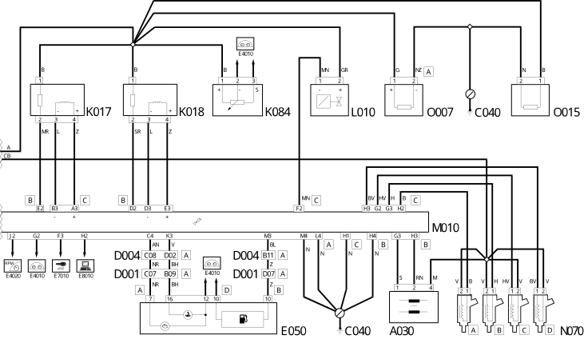

E5030 PETROL ENGINE ELECTRONIC MANAGEMENT WIRING DIAGRAM
- Path
- Electrical equipment > 1 ELECTRICAL FUNCTIONS > E50 ENGINE CONTROL AND MANAGEMENT SYSTEMS > E5030 PETROL ENGINES ELECTRONIC MANAGEMENT > E5030 PETROL ENGINE ELECTRONIC MANAGEMENT WIRING DIAGRAM
- Kind
- topic
- Applies to
- engines: 2.0 16V; all production periods
- Interactive page
- https://sloeber94.github.io/elrnDB-fDct/en/#/244001921
Applies to: engines: 2.0 16V; all production periods
Wiring Diagram


Components
Component code | Description | Reference to the assembly |
|---|---|---|
IGNITION COIL | 5510C | |
JUNCTION UNIT | 5,505A | |
MAXI FUSE BOX ON BATTERY | - | |
ENGINE EARTH | - | |
FRONT/DASHBOARD COUPLING | - | |
FRONT/ENGINE COUPLING | - | |
FRONT/CILC (FUEL LEVEL GAUGE CIRCUIT) COUPLING | - | |
INSTRUMENT PANEL | ||
IGNITION SWITCH | - | |
INERTIA SWITCH | ||
LAMBDA SENSOR ON CATALYZER | 1,080B | |
LAMBDA SENSOR ON CATALYZER - 2 | 1,080B | |
ENGINE OIL LEVEL SENSOR | 1,084A | |
ENGINE COOLANT TEMPERATURE SENSOR/SENDER UNIT | - | |
AIR TEMPERATURE SENSOR | - | |
RPM SENSOR | - | |
TIMING SENSOR | - | |
ABSOLUTE PRESSURE SENSOR | - | |
DETONATION SENSOR | 5510C | |
THROTTLE POSITION SENSOR | - | |
SPEEDOMETER SENSOR | - | |
FUEL VAPOUR RECOVERY SOLENOID VALVE | 1080E | |
ENGINE MANAGEMENT ECU | - | |
MAIN INJECTION RELAY DIODE | - | |
FUEL PUMP AND EPIC LEVEL GAUGE | ||
INJECTOR | 1,056B | |
THROTTLE BODY ACTUATOR | - | |
OIL VAPOUR HEATING RESISTANCE | - | |
THROTTLE CASING HEATING RESISTANCE | - |
Topics linked from this page (31)
- 1040A FUEL TANK AND COMPONENTS
- 5560B ANALOGUE CONTROL PANEL
- A030 IGNITION COIL
- B001 JUNCTION UNIT
- B099 MAXI FUSE BOX ON BATTERY
- C040 ENGINE EARTH
- D001 FRONT/DASHBOARD COUPLING
- D004 FRONT/ENGINE COUPLING
- D145 FRONT/CILC (FUEL LEVEL GAUGE CIRCUIT) COUPLING
- E050 INSTRUMENT PANEL
- H001 IGNITION SWITCH
- I050 INERTIA SWITCH
- K017 LAMBDA SENSOR ON CATALYZER
- K018 LAMBDA SENSOR ON CATALYZER - 2
- K032 ENGINE OIL LEVEL SENSOR
- K036 ENGINE COOLANT TEMPERATURE SENSOR/SENDER UNIT
- K042 AIR TEMPERATURE SENSOR
- K046 RPM SENSOR
- K047 TIMING SENSOR
- K048 ABSOLUTE PRESSURE SENSOR
- K050 DETONATION SENSOR
- K056 THROTTLE POSITION SENSOR
- K084 SPEEDOMETER SENSOR
- L010 FUEL VAPOUR RECOVERY SOLENOID VALVE
- M010 ENGINE MANAGEMENT ECU
- M011 MAIN INJECTION RELAY DIODE
- N041 FUEL PUMP AND EPIC LEVEL GAUGE
- N070 INJECTOR
- N075 THROTTLE BODY ACTUATOR
- O007 OIL VAPOUR HEATING RESISTANCE
- O015 THROTTLE CASING HEATING RESISTANCE